In a hard techno track, every sound has a job. The kick keeps time. The rumble gives weight. The hi-hats push things forward. We asked a simple question. What can you measure that tells you a sound's job?
This page gives a first answer. It is a start, not a finish. We read the research. We built test sounds and measured them. We measured 26 real tracks. Then we ranked what matters.
The page ends with a plan. The plan aims for ten times more understanding. It is built for one person with a laptop.
We use six jobs. Most sounds in this music fit one of them. Some sounds do two jobs at once.
We used three sources of evidence. Each one covers a gap in the others.
Papers. We read 25 studies and articles. They cover hearing, and how dance music is built. Most are science papers. Some are from named producers. We say which is which.
Test sounds. We built a small synth in code. It makes one clean sound per job. It can change one setting at a time. We call that a sweep. Then we measured each sound with the same tools.
Real tracks. We took 26 tracks released under a Creative Commons licence. All are from 2018 or later. Most run between 140 and 165 BPM. We measured where each kind of sound sits in the bar. We also measured when the kick drops out.
The real tracks are not famous ones. Famous hard techno is not free to use. Our tracks come from small labels that release for free. One producer made eleven of the 26. That is a real limit. We say more about it below.
Here is our ranking. It is based on all three sources. A tag shows how strong the evidence is. "Strong" means papers and our own tests agree. "Medium" means one source, or a partial test. "Weak" means a good idea we could not test.
We call this the rise time. Two old studies put it among the top two cues. Our tests agree. A closed hat starts in under one ms. A kick starts in about one ms. A clap takes about fifty ms.
A pad takes hundreds of ms. A riser takes seconds. The clap result surprised us. A clap is many short bursts stacked up. That makes it the only slow-starting drum. The slow start is part of what says "clap".
We measured the time to fall 40 dB. Call it the decay. A closed hat is gone in about 30 ms. A kick takes about 200 ms. A rumble takes about 500 ms. A pad takes two seconds, a riser eight.
We also measured the sustain share. That is the share of energy after the first 50 ms. For hats it is zero. For a kick it is about a third. For a rumble it is nearly all. This one number splits "hits" from "holds".
The measure is the spectral centroid. We just call it brightness. It is the other top cue for the ear. A pad sits near 130 Hz. A rumble sits near 500 Hz. A kick sits near 750 Hz.
A clap sits near 3.5 kHz. Hats sit above 10 kHz. So brightness alone sorts the drums into three groups.
A finer view is the band share. It says how much energy sits in each band. The kick puts six tenths in the sub band. The rumble puts seven tenths there. Hats put almost all of it in the air band.
A sound's job depends on when it plays. The kick sits on every beat. Hats often sit on the offbeats. One study found that offbeat pushes make people want to move. Another found the kick drives the down move of the body. The hat drives the up move.
In our tracks, 44 in 100 sub attacks land on beats. Chance is 25. High-band energy leans to the offbeats. Details are in the real-track section below.
Call it onset density. The kick hits four times a bar. Hats hit eight or sixteen times. A clap hits twice or four times. A hook may play once a bar. A riser plays once in a whole phrase.
Studies that locate a track's changes lean on this count.
The measure is spectral flatness. We call it noisiness. Hats, claps and risers are noise. Kicks, rumbles, stabs and pads are tone. Only the stab gave our tools a clear pitch.
One caution. Our clap measured as less noisy than it sounds. That is because it is noise in a narrow band. The measure is not perfect.
Some sounds stay for the whole track. Others come and go in blocks. The kick leaves for the breakdown. It comes back at the drop. The best studies of dance music structure are built on this. They find the drop by energy, brightness change, and hit count.
The kick is off a quarter of the time. The longest stretch is 16 bars in the middle track. Most stretches are multiples of four bars.
Call it the crest factor. It is the peak level over the average level. Hits have a high crest factor. Held sounds have a low one. Hats and claps sit near 24 dB. A kick sits near 8 dB.
A pad sits near 5 dB. One paper used this on whole techno tracks. Nobody has used it on single techno sounds yet.
A hard techno kick starts high and falls. Where it lands sets the weight. At 35 Hz, most of the energy is sub. At 90 Hz, almost none is. Producers say this all the time. Our sweep confirms it, but no paper has measured it.
The rumble ducks each time the kick hits. That is sidechain. One paper shows it shifts when a sound seems to start. Producers treat it as a core tool. We found one way to see it in a mix.
Sub attacks sit on the beats. Sub energy sits between them.
That gap is the pump. We have not yet turned it into a depth or speed. That is the next step.
Here you can hear the sweeps. Each row changes one setting. The charts show what the measurements did. This is how we checked that the measures mean something.
Lower landing pitch, more sub weight. The rest of the sound is the same.
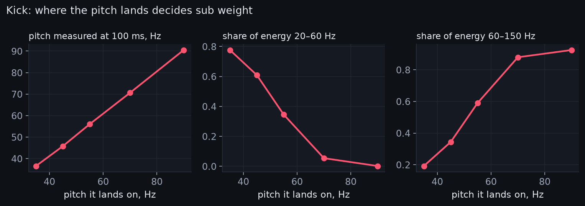
A longer tail trades punch for weight. The crest factor falls from 12 dB to 5 dB.
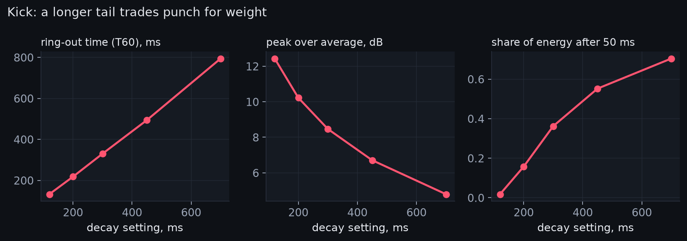
Drive is soft distortion. It flattens the peak and lifts the body. The crest factor drops from 16 dB to 8 dB. The average level rises by 8 dB.
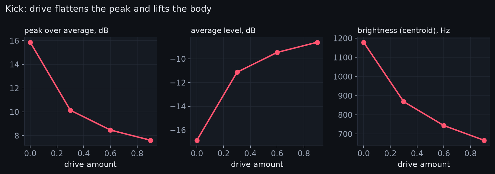
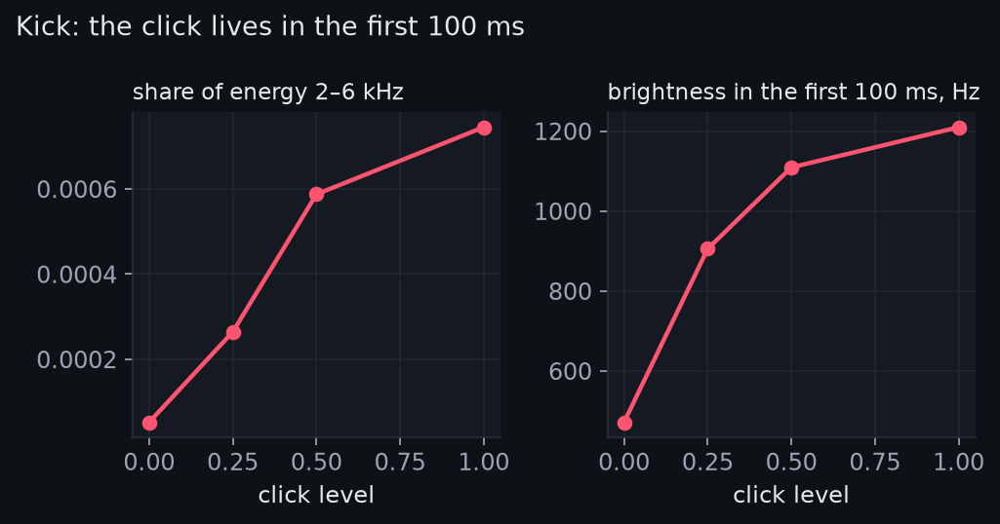
A closed hat and an open hat are the same sound. Only the decay differs. The measured decay follows the setting in a straight line.
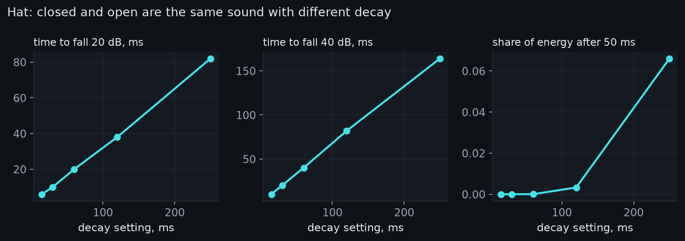
One burst reads as a snare. Three bursts read as a clap. The rise time goes from 9 ms to 47 ms. Nothing else changes much.
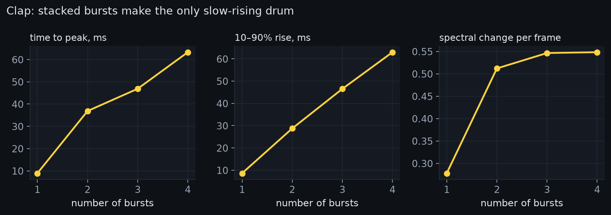
Drive turns a pluck into a held tone. The decay time triples. The crest factor halves. The pitch stays the same.
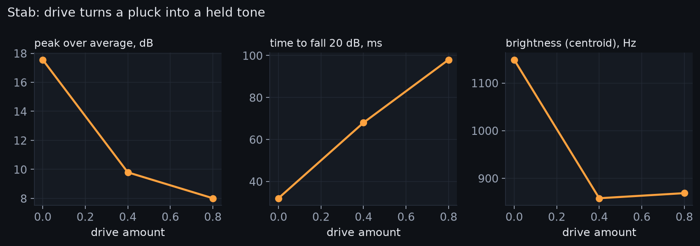
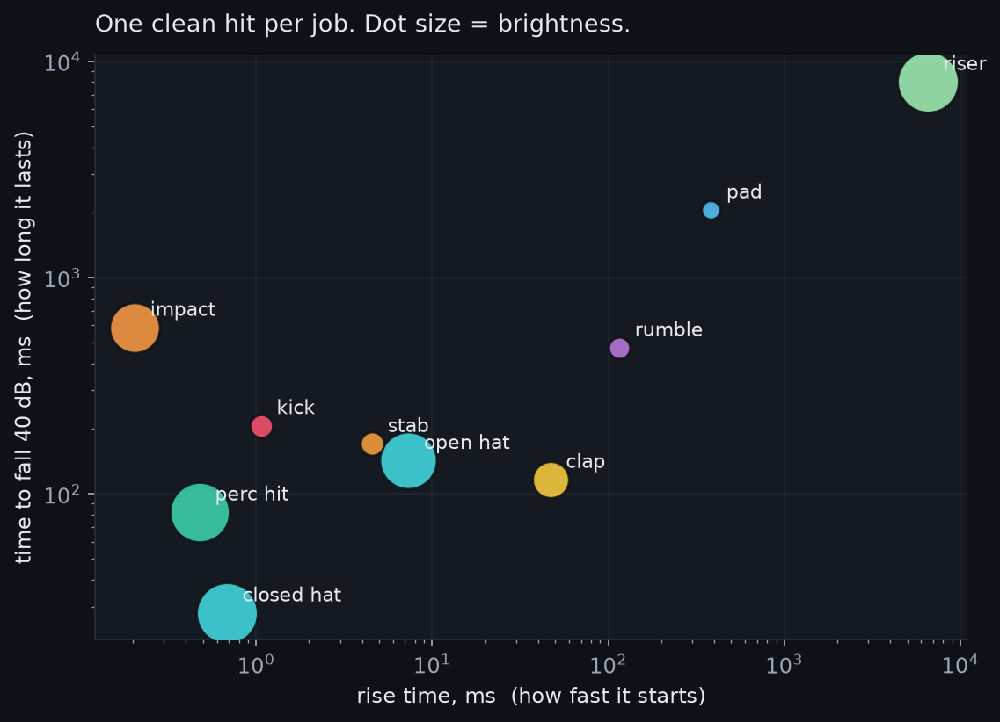
These are plain test sounds, not finished ones. They are made so one setting can change at a time.
One bar at 150 BPM. The kick sits on every beat. The hats sit on the offbeats. The rumble ducks under each kick.
| job | rise, ms | fall 40 dB, ms | sustain share | brightness, Hz | noisiness | crest, dB | sub share | air share |
|---|---|---|---|---|---|---|---|---|
| kick | 1.1 | 206 | 0.36 | 744 | 0.000 | 8.5 | 0.61 | 0.00 |
| rumble | 115 | 472 | 1.00 | 528 | 0.000 | 10.4 | 0.74 | 0.00 |
| closed hat | 0.7 | 28 | 0.00 | 12300 | 0.27 | 23.3 | 0.00 | 0.96 |
| open hat | 7.3 | 142 | 0.05 | 10200 | 0.35 | 24.7 | 0.00 | 0.96 |
| clap | 46.9 | 116 | 0.63 | 3550 | 0.018 | 24.6 | 0.00 | 0.00 |
| perc hit | 0.5 | 82 | 0.00 | 11400 | 0.27 | 23.5 | 0.00 | 0.72 |
| stab | 4.6 | 170 | 0.23 | 859 | 0.000 | 8.3 | 0.00 | 0.00 |
| pad | 382 | 2050 | 1.00 | 130 | 0.000 | 5.5 | 0.33 | 0.00 |
| riser | 6530 | 8020 | 1.00 | 12200 | 0.39 | 16.7 | 0.00 | 0.79 |
| impact | 0.2 | 586 | 0.73 | 7680 | 0.025 | 12.2 | 0.83 | 0.01 |
We took the 26 tracks and found each one's beat. Then we folded every bar onto one. We split that bar into 16 steps. For each band we asked two things. Where do its attacks land, and where does its energy sit? We call this the energy grid.
Finding the beat was the hard part. Our first two tries failed. The rumble made every step look like a hit. The fix was to lock onto the sub band alone. Only the kick rises sharply down there. We tested the method on our own loops first.
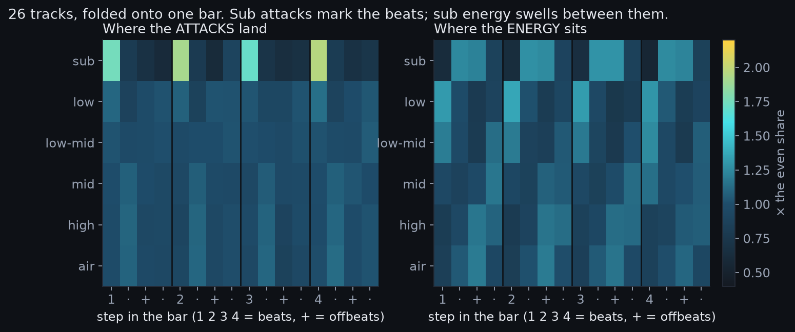
In the sub band, attacks land on the beats. On average, 44 in 100 land on the four beat steps. An even spread would give 25. In 25 of 26 tracks, the top sub attack is on-beat. That is the kick, measured from full mixes.
Sub energy tells the opposite story. Only 13 in 100 sits on the beats. More than half sits on the off sixteenths. So the sub band starts on the beat, then swells. That swell is the rumble, ducked by sidechain.
We had thought the pump was not measurable in a mix. This gap between attack and energy is one way. It needs more work to become a number.
The high and air bands lean to the offbeats, a little. About 29 in 100 of high energy sits on offbeat eighths. About 19 in 100 sits on the beats. The high band peaks on a beat in only one track. The lean is real but small. Hats here play on many steps, not just the offbeats.
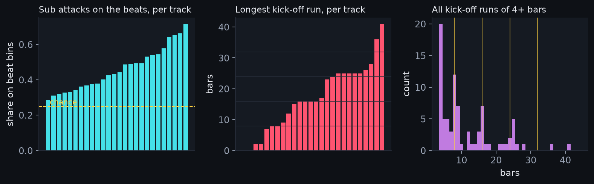
The kick is off about a quarter of the time. The longest kick-off stretch is 16 bars in the middle track. It ranges from none to 41. We found 84 kick-off stretches of four bars or more.
More than half are multiples of four bars. A quarter are multiples of eight. By chance you would expect a quarter and an eighth. So the stretches lean to round numbers of bars.
Does the kick return on the same eight-bar line each time? In the middle track, two returns in three do. In four tracks every return does. That is the phrase rule, seen in the data. It holds often, not always.
We do not know where bar one is. So this is a lower bound.
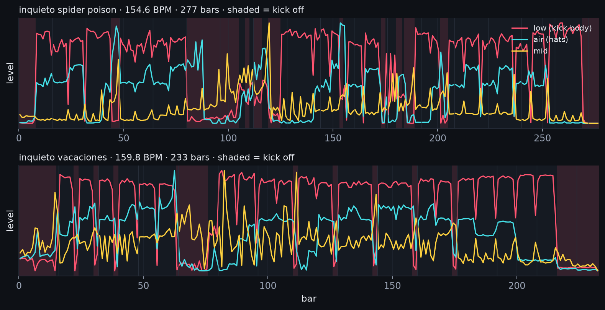
In the kick-off stretches, the low bands go quiet. The mid and high bands mostly keep going. That fits the jobs. The kick and rumble leave together. The drive and the hook carry the breakdown. The kick's return is the drop.
The tracks run from 133 to 172 BPM. The middle is 152. One track reads as 94. That is likely half its speed. We treat it as an outlier.
Be clear about the limits. They shape what the numbers mean.
Help with a listening test. You can help close the biggest gap above. Try our new listening test.
Here is what we would do next. It is built for one person, a laptop, and spare time. Each stage stands alone. Each one is worth doing on its own.
Together they aim for ten times more. Ten times the tracks. Ten times the sounds. And the one thing we have none of: listeners.
Make 300 single sounds, thirty per job. Use free sample packs and our synth. Label each one by job. Measure all of them. Then train a small classifier. Ask it which measures it needs to get the job right.
Success looks like this. The classifier names the job nine times in ten. It does so from five measures or fewer. We learn which five. Cost: two weekends and free tools.
Build a web page with pairs of sounds. Each pair differs in one setting. Ask "what job is this sound for?" Then ask "which one is more of a kick?" Recruit twenty producers online. Twenty people, forty pairs, twenty minutes each.
This gives the missing evidence. It says which measures people actually use. A measure can look good and still not matter to ears. This would show that. Cost: one weekend to build, two weeks to collect.
The rumble was our weakest result. Fix that first. Take the low band of a mix. Track its level over each beat. The dip after each kick is the pump. Its depth and its return time are two new measures.
Test the method on our synth loops first. There we know the true pump. Then run it on the corpus. Cost: one weekend.
The free labels we found have hundreds more tracks. Fetch 250. Add a downbeat finder so we know bar one. Then re-run the energy grid. Now we can test the phrase rules.
Does the kick return on an eight-bar line? Does the clap sit on two and four? How long is a breakdown, in bars? These are simple questions. Nobody has answered them for hard techno.
Also track who made each track. Then we can check that our findings hold across producers. Cost: a week of compute on a laptop, spread out.
Ask the free-label producers for stems. Some will say yes. Even ten tracks of stems would be new. Then the single-sound measures can be run on real sounds. We can check our synth against the real thing.
Wrap the best measures in a small tool. Drop a sound on it. It says "this reads as a clap" and shows why. Give it away. If producers find it useful, it will get used.
Then it will get corrected. That is the fastest way to learn in public.
| thing | now | after the programme |
|---|---|---|
| real tracks measured | 26 | 250+ |
| producers in the corpus | 12 | 60+ |
| single sounds measured | 10 (synth) | 300 labelled, some real |
| listener judgements | 0 | 800 |
| the pump measured | no | yes |
| bar one known | no | yes |
Ranked by kind. Peer reviewed first. Named producers next. Trade articles last. Full notes are in the code and notes.
All are released under Creative Commons BY-NC-ND. That means: credit the maker, no resale, no remixes. Measuring them is allowed. Sharing the audio is not, so we do not. Each link goes to the label's own page.
| artist | track | year | label | licence |
|---|---|---|---|---|
| Combat Killer | Global Function | 2018 | Fresscode Records | CC BY-NC-ND 4.0 |
| Combat Killer | Kalibrator | 2018 | Fresscode Records | CC BY-NC-ND 4.0 |
| Sol 1 | The Truth | 2022 | Fresscode Records | CC BY-NC-ND 4.0 |
| Pakistan Techno Force | Bugs In Space | 2024 | Fresscode Records | CC BY-NC-ND 4.0 |
| THE D3VI7 | Temple (Hanzzo Remix) | 2020 | Dancefloor Socialism | CC BY-NC-ND 4.0 |
| THE D3VI7 | Technological Crime | 2023 | Dancefloor Socialism | CC BY-NC-ND 4.0 |
| Jerzz | Aurora Borealis | 2025 | Dancefloor Socialism | CC BY-NC-ND 4.0 |
| AFFLICTED | Natural Desaster | 2025 | Dancefloor Socialism | CC BY-NC-ND 4.0 |
| Stanley Hottek | Hardwired | 2025 | Dancefloor Socialism | CC BY-NC-ND 4.0 |
| Cement Tea | Chip Withdrawal (Bonus Sodium) | 2023 | Psychocandies | CC BY-NC-ND 4.0 |
| THE D3VI7 | Paint It Acid (VIIII) | 2026 | Psychocandies | CC BY-NC-ND 4.0 |
| THE D3VI7 | Paint It Acid (X) | 2026 | Psychocandies | CC BY-NC-ND 4.0 |
| Inquieto | Chaf Flares | 2025 | InquietoMusik | CC BY-NC-ND 4.0 |
| Inquieto | Eruption | 2025 | InquietoMusik | CC BY-NC-ND 4.0 |
| Inquieto | Zona de avistamientos | 2025 | InquietoMusik | CC BY-NC-ND 4.0 |
| Inquieto | Jajanken | 2025 | Physical Techno Recordings | CC BY-NC-ND 4.0 |
| Inquieto | Spider Poison | 2024 | Physical Techno Recordings | CC BY-NC-ND 4.0 |
| Inquieto | Samurai | 2025 | InquietoMusik | CC BY-NC-ND 4.0 |
| Inquieto | Vacaciones | 2023 | InquietoMusik | CC BY-NC-ND 4.0 |
| Inquieto | Metalic Dog | 2024 | InquietoMusik | CC BY-NC-ND 4.0 |
| Inquieto | Always Horney (Original Mix) | 2024 | InquietoMusik | CC BY-NC-ND 4.0 |
| Inquieto | Es un hermoso dia | 2024 | BlackVogue Records | CC BY-NC-ND 4.0 |
| Industeak | Hit The Floor | 2024 | BlackVogue Records | CC BY-NC-ND 4.0 |
| TKG | Radical Rebellion | 2024 | BlackVogue Records | CC BY-NC-ND 4.0 |
| Inquieto | Solo para profesionales | 2023 | InquietoMusik | CC BY-NC-ND 4.0 |
| DJ Andre Darth | dark hard techno demo | 2019 | Jamendo (archive mirror) | CC BY-NC-ND 3.0 |